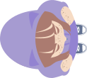
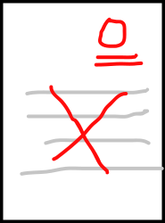

跟著滑鼠走
用方向與移動積木，讓角色追著游標跑。


LESSON 01 / 躲考卷這次，一起學會
用方向與移動積木，讓角色追著游標跑。
認識條件判斷，讓遊戲知道什麼時候結束。
用變數記錄秒數，再試一次，挑戰自己。
教學共 8 個階段、13 個小步驟，建議安排 2～3 節課，每節 40 分鐘。可使用投影模式，一步一步帶著全班完成。
本課依提供的「躲考卷.sb3」原始程式整理。作者與素材來源尚未提供；本網站供 Scratch 教學使用。Scratch 與 TurboWarp 為各自專案的名稱，本網站並非官方網站。